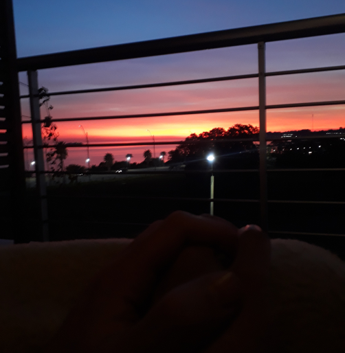
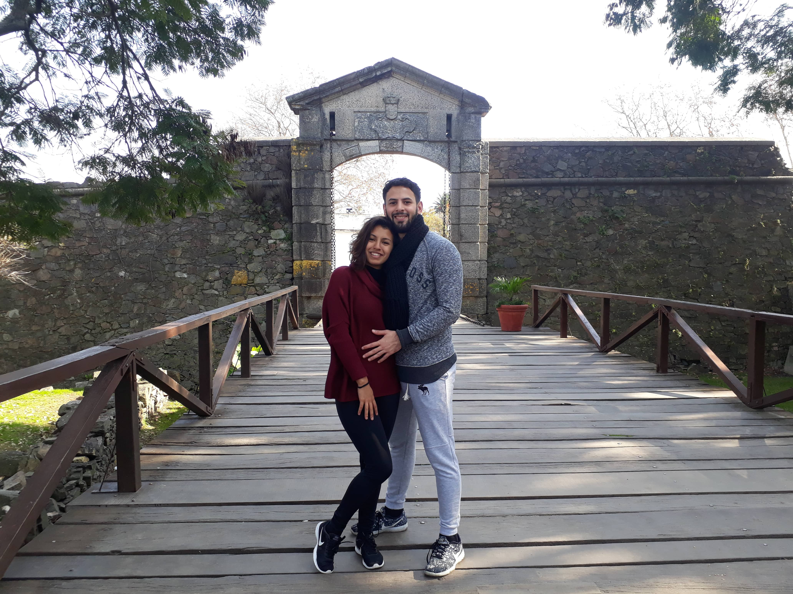

Mis visitas a Portobelo (Panamá) y a Parati (Brasil) habían despertado un sentimiento de atracción y misterio hacia las ciudades costeras antiguas, donde predominan fuertes, cañones y en donde nos podemos dejar llevar en cada rincón e imaginar como las personas vivían hace muchísimos años. ¿Quién caminó por esta playa? ¿Qué historia de conquistas ocurrió en aquel edificio de piedra? ¿Quién utilizó aquel cañón ahora corroído por el tiempo?
Fue así que el martes 19 de Junio de 2018 me encontraba ingresando al Ferry que conecta Buenos Aires (Argentina) con Colonia del Sacramento (Uruguay) ¿Cómo podía ser que tenía uno de los destinos de playa más antiguos del mundo tan cerca y todavía no lo había conocido? La realidad es que el lugar de destino, esta vez, no lo era todo. Tenía compañía ¿Se acuerdan de la famosa chica de la ducha? Para los que no lo saben, en mis andadas por Brasil me pasaron mil cosas, entre ellas, conocí en una ducha de hostel a una chica paulista y después de vernos unas cuantas veces nos encontrábamos juntos yendo a Uruguay. Para los que quieran conocer esta historia, un tanto novelesca, e información de algunas de las playas más lindas de Brasil pueden pinchar AQUÍ.
Atardecer en Colonia del Sacramento, Uruguay.
Viajamos por Colonia Express donde los pasajes cuestan ida y vuelta alrededor de 18.000 pesos argentinos por persona (2023). También pueden optar por otras empresas como por ejemplo, Buquebus, aunque suele ser un poco más costosa.
Los precios están sujetos a constantes cambios. Te recomiendo que los chequees en las páginas oficiales que te indiqué en el párrafo anterior.
Llegamos al Costa Colonia Boutique Hotel donde pagamos la noche en una habitación con vista al río, y con cena y desayuno para dos, 125usd. En el primer tramo de la tarde, disfrutamos de la piscina del hotel donde estábamos completamente solos y la música, paradójicamente brasileña, hacia que tengamos el momento de relax que tanto necesitábamos. Ya descansados, nos decidimos ir a comer algo a un mercadito cercano al hotel donde casi sin querer nos sorprendió un atardecer tan increíble que terminamos comiendo muy rápido y yendo a la costa a deleitarnos. Estaba siendo todo perfecto, era increíble pero desde esa primera vez que nos conocimos en Ilha Grande, todo entre nosotros sucedía con magia y esta no era la excepción.
La tarde se puso aún mejor cuando rápidamente volvimos al hotel y nos dirigimos al balconcito de la habitación, ahí me di cuenta que la vista al río había sido una decisión magnifica. A cada segundo el atardecer se ponía todavía más hermoso y el cobertor que habíamos agarrado y la música de fondo crearon un ambiente confortable para conversar y compartir. Algo tan simple que las personas que viven lejos no pueden compartir. Definitivamente, Uruguay me estaba pidiendo a gritos que vuelva a creer en el "mundo romántico".
Atardecer desde el balcón de la habitación del Costa Colonia Boutique Hotel.
Cenamos en el hotel unos chivitos uruguayos y estábamos listos para hacer nuestra primera visita al Casco Histórico.
Calle de los Suspiros, Colonia del Sacramento, Uruguay.
El remis nos pasó a buscar por el hotel y en pocos minutos llegamos al centro histórico de Colonia. Eran las 23:30hs de un martes de invierno y los pocos bares que estaban abiertos comenzaban a cerrar.
Nos encontrábamos solos ante las luces de farola que iluminaban las calles de piedras y las construcciones coloniales que nos permitían viajar mentalmente al 1600. La ciudad, que en 1995, fue declarada Patrimonio de la Humanidad por la Unesco, estaba totalmente vacía para nosotros.
Dimos varias vueltas por todas las callecitas del centro, parando en cada casa antigua para fantasear e inventar alguna historia de lo que en ella había sucedido. Disfrutamos de la grandeza del faro, la imponencia de la Puerta de la Ciudadela y la hermosura de la Calle de los Suspiros. Sinceramente, cada rincón del casco histórico es increíble y en cada edificio tenemos información sobre que sucedió ahí hace muchísimos años atrás.
A cada paso que dábamos nos sorprendíamos más, la fusión de estilos portugueses, españoles y post-colonial son verdaderamente llamativos.
Sin embargo, aún faltaba más, al otro día al mediodía, aprovechamos que Uruguay jugaba por la Copa del Mundo y nos fuimos nuevamente al centro para aprovecharlo de día. Bordeamos la costa que rodea al Casco Histórico, que en la noche no habíamos podido apreciar, y descubrimos todavía más recovecos de esta ciudad. El placer fue enorme cuando de casualidad entramos a la Galería de los Suspiros, una pequeña casa antigua hecha museo de arte. La misma se encuentra en la calle con el mismo nombre y contiene diversas obras y hasta representaciones de habitaciones y cuartos propios de la época colonial.
Puerta de la Ciudadela, Colonia del Sacramento, Uruguay.
En nuestras últimas horas en Colonia nos fuimos a almorzar a un restaurante con terrazita que ofrecía una de las vistas más lindas de la ciudad, para después seguir perdiéndonos por sus callecitas y playas.
De los lugares antiguos que conocí hasta el momento, sin lugar a dudas, Colonia es uno de los más mágico por toda su carga cultural y por la excelente mistura entre arquitectura, gastronomía y costa. Las negativas: los precios y las expectativas que podamos llegar a tener sobre las playas, que no tienen nada que ver con paraísos de agua cristalina y arena blanca. ¿Con quién ir? Turísticamente está pensado para familias y sobre todo para parejas, pero qué mas da, si les gusta lo colonial vayan solos, con amigos, o como quieran, pero vayan.